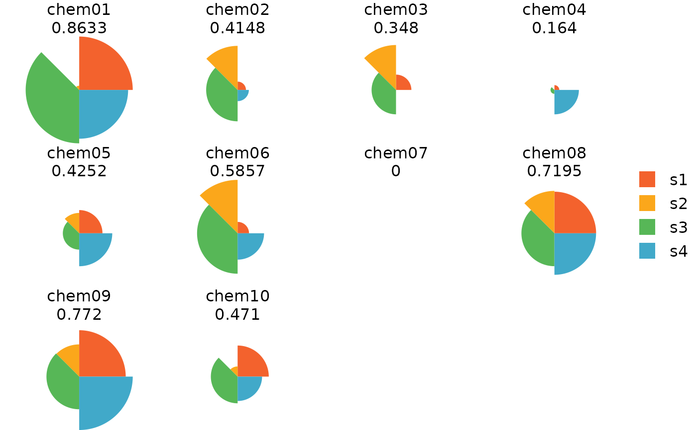

Plot TxpResult objects
Usage
# S4 method for TxpResult,missing
plot(
x,
fills = NULL,
showScore = TRUE,
gp = NULL,
vp = NULL,
name = NULL,
newpage = TRUE,
...
)
# S4 method for TxpResult,numeric
plot(
x,
y,
labels = NULL,
newpage = TRUE,
margins = c(4, 0, 1, 1),
name = NULL,
gp = NULL,
vp = NULL,
...
)Arguments
- x
TxpResult object
- fills
Vector of colors to fill slices
- showScore
Logical scalar, overall score printed below the name when
TRUE- gp, vp, name
Passed to grid::frameGrob when creating the plotting area
- newpage
Logical scalar, grid::grid.newpage called prior to plotting when
TRUE- ...
Passed to pieGridGrob when plotting ToxPi and to pointsGrob when plotting ranks
- y
Rank vector, i.e.
txpRanks(x)- labels
Integer vector, indices of
xto label in the rank plot- margins
Passed to grid::plotViewport; only affects the scatterplot region margins
Details
It is strongly recommended to use a specific device (e.g., grDevices::png, grDevices::pdf) when creating rank plots. Using a GUI device will likely lead to inaccurate labeling, and any changes to the device size WILL lead to inaccurate labeling.
The plotting is built on the grid::grid-package, and can be adjusted or edited as such.
If the labels are running of the device, the top or bottom margins can be
increased with the margins parameter.
Functions
plot,TxpResult,missing-method: Plot ToxPi diagramsplot,TxpResult,numeric-method: Plot ToxPi ranks
Examples
## Load example dataset & model; see ?TxpModel for building model objects
data(txp_example_input, package = "toxpiR")
data(txp_example_model, package = "toxpiR")
## Calculate scores for single model; returns TxpResult object
res <- txpCalculateScores(model = txp_example_model,
input = txp_example_input,
id.var = "name")
library(grid)
plot(res)

plot(res, txpRanks(res))
plot(res, txpRanks(res), pch = 16, size = unit(0.75, "char"))
## Will likely make inaccurate labels within a GUI, e.g. RStudio
## use png, pdf, etc. to get accurate labels
if (FALSE) {
tmpPdf <- tempfile()
pdf(tmpPdf)
plot(res, txpRanks(res), labels = c(10, 4, 2), pch = 16)
dev.off()
}